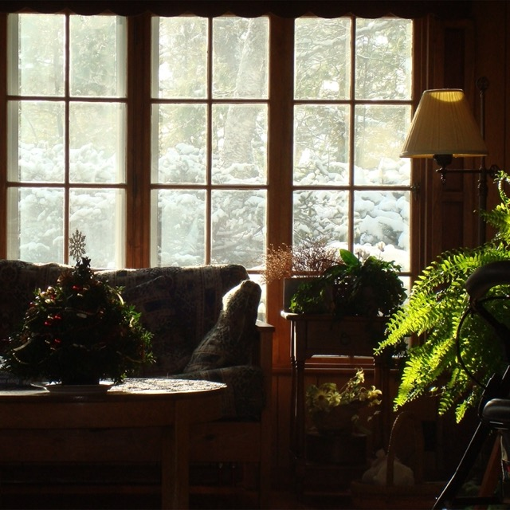
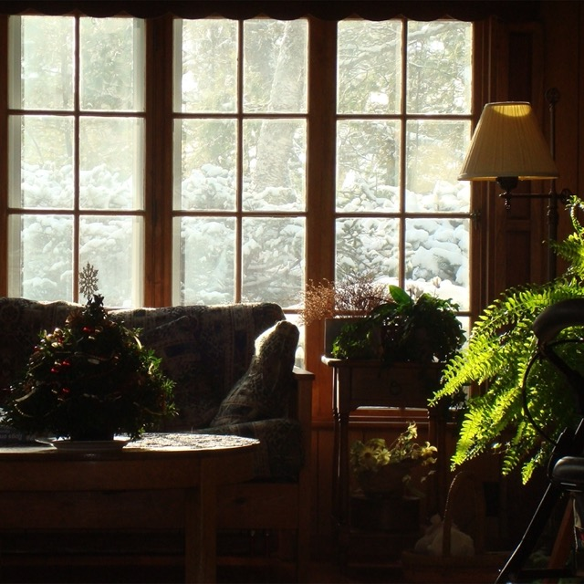

i'm maggie, a designer based in boston. i am a maker, i enjoy carving, sculpting, knitting, and printmaking. i am always in the act of creation. i am driven by the transformative nature of art and design, making something new out of nothing, enthralled by the beauty in change. i
floral motifs,
art nuveaux/ornamental carvings on the fancy brick homes in back bay,
my mom,
my sweet family,
my sweet friends,
clay,
ceramics,
wheel throwing,
playing in the mud,
swimming in the ocean far before it's warm enough to do so comfortably,
color,
the green of the seagrass on the marsh,
the smell of the marsh,
the blue of the sky over the marsh,
plum island in its totality,
essex county massachusetts,
waldo county maine,
every dog,
cat,
mouse,
pigeon,
or sheep that has ever looked me in the eyes,
my grandmother and her quilts,
the shade of turquoise that she brings to everything she touches,
falling snow in boston,
riding my bike in subzero temps and forcing a memory of riding bikes late at night while the asphalt still radiates heat in july,
an empty street,
a full kitchen,
a large and healthy bird of paridise and monstera.


 
